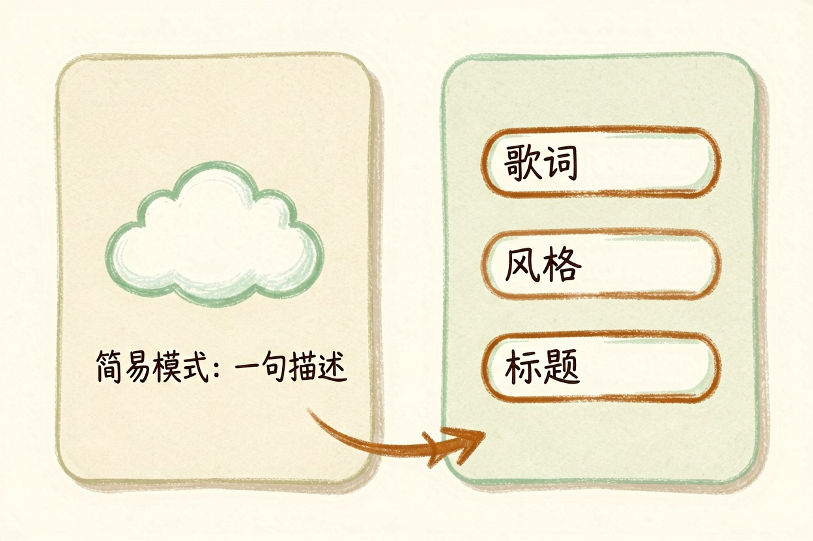
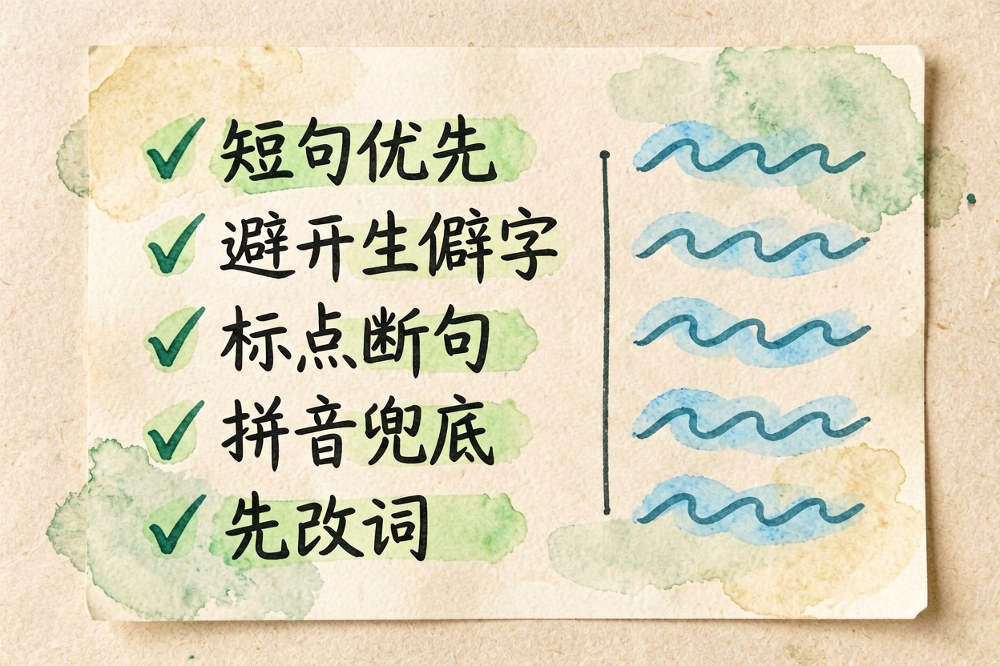
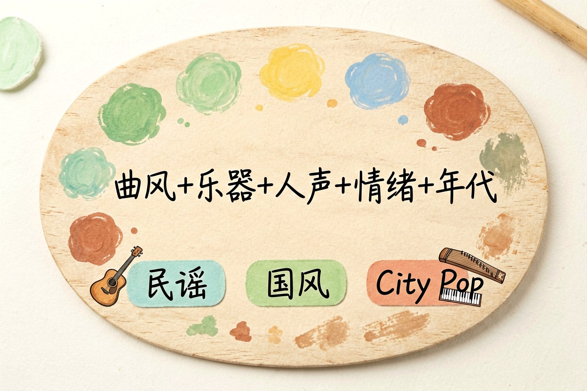
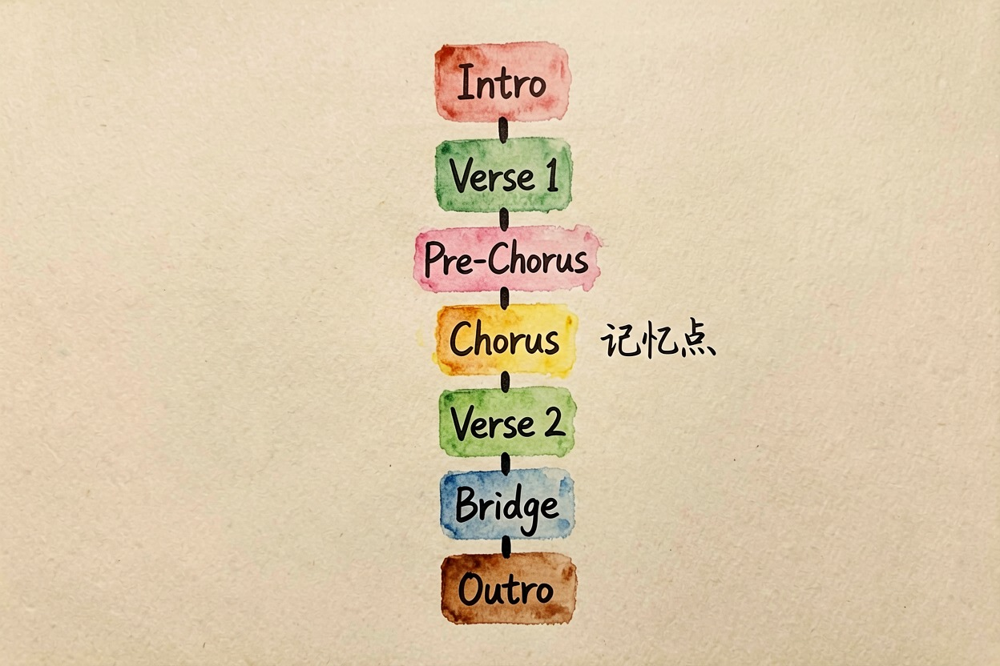
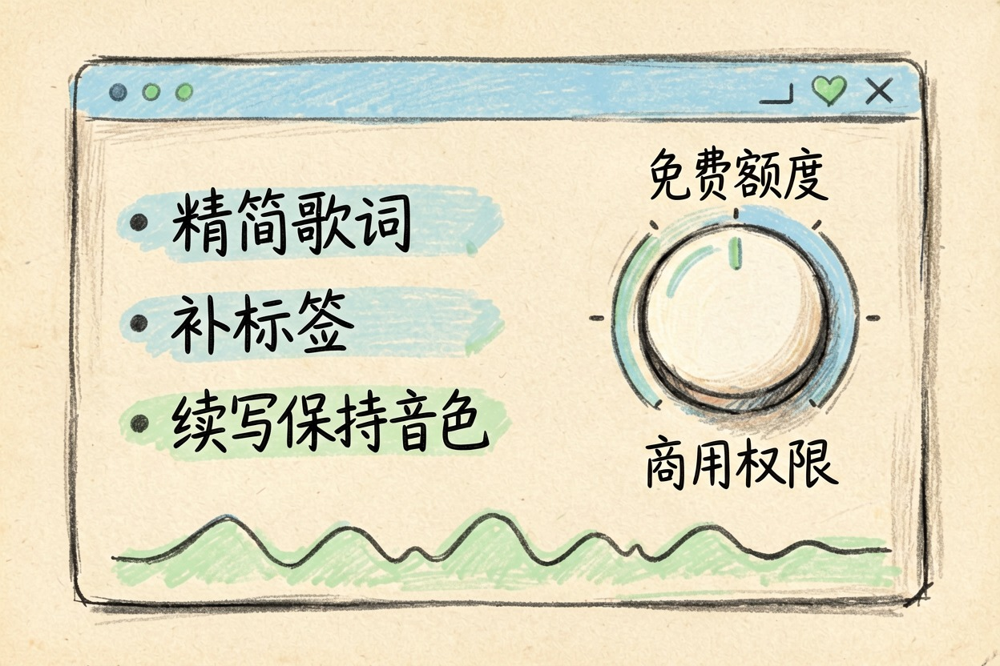

Suno 怎么用？中文歌词到成品歌
英文提示词照抄一遍，出来的中文歌总带股翻译腔。毛病多半在歌词本身，不在模型。
Suno 怎么用？三分钟先出第一首

Suno 怎么用，最快的路子是先跑通一遍，再谈优化。注册用邮箱或第三方账号都行，进去会看到两种模式。
简易模式只要填一句描述，比如"一首关于毕业的温柔民谣"，歌词、旋律、演唱全由它包办。适合第一次上手，先看看大概什么水平。
自定义模式才是常用的。三个输入框：歌词、风格描述、标题。歌词可以自己写，也能让它代写；风格描述决定曲风走向。这两块定了成品的九成，旁白配音看AI 语音与配音工具对比。
一次生成通常给两版，都不满意就重跑。别只改一个词，那样出来的差别几乎听不出，要改就改风格描述里的关键项。
中文歌怎么才不像"外国人唱中文"

这是中文用户最大的痛点，英文教程完全不覆盖。五个技巧按重要性排：
短句优先。一行控制在七到十二个字，长句会被硬塞进一个乐句，唱得又急又糊。
避开生僻字和中英混排。"氤氲""踌躇"这类词咬字失败率很高，一行里中英夹杂更容易读串。
用标点控断句。逗号和句号是它判断换气位置的主要依据，该停的地方一定要打标点，不要整行连着写。
拼音兜底。某个词反复唱错，把它换成拼音或者近音字，出来往往就对了。歌词是给耳朵听的，纸面上难看没关系。
先改词再改风格。做独立音乐的阿泽刚开始一直调风格描述，折腾几十次也没解决咬字，后来把歌词断行重排了一遍，一次就顺了。
风格提示词公式与三个可复制示例

风格描述别写成一句形容词。用这个公式：曲风 + 主奏乐器 + 人声性别与质感 + 情绪 + 年代或制作质感。五个要素都给全，出来的稳定性会高很多，写法看风格提示词怎么写。
民谣：acoustic folk, fingerstyle guitar, soft male vocal,
nostalgic, warm analog production
国风：chinese traditional, guzheng and dizi, clear female vocal,
cinematic and melancholic, modern mixing
City Pop：japanese city pop, electric piano and slap bass,
breathy female vocal, dreamy, 1980s tape warmth风格词写英文识别更准，歌词写中文，两者不冲突。
歌词结构标签怎么写

结构标签是控制歌曲走向的开关。不写标签，它会自己安排，副歌经常出不来。
[Intro]
[Verse 1]
（四到六行，铺情境）
[Pre-Chorus]
（两行，情绪抬起来）
[Chorus]
（四行，反复出现的核心句放这里）
[Verse 2]
[Chorus]
[Bridge]
（两到四行，转折）
[Outro]副歌那几行是整首歌的记忆点，写完自己念一遍，念着别扭唱出来一定别扭。
免费额度、导出与常见问题

免费档一般有每日生成上限，商用权限通常绑在付费档上，各家政策也在变。要拿去做视频配乐或者商业投放，先去官方条款页确认当前版本怎么写，这一步别省。个人练手、发在自己账号里当背景音乐，一般不用太纠结；一旦涉及商品页和广告投放，规则完全是另一套。
跑调和副歌不出现，多半是歌词太长或结构标签缺失，回去精简歌词、补齐标签。时长不够就用续写功能接一段，别重开一首，音色会对不上。想给短视频配乐，做成纯伴奏版本更百搭，给视频配原创 AI 音乐。
说到底，Suno 怎么用不难，难在歌词。模型能补旋律和编曲，补不了词里的空洞，别指望一句描述换来一首能反复听的歌。
本文信息核对于 2026-08-05。AI 产品的价格、免费额度与功能变动频繁，实际以各工具官网当前说明为准。